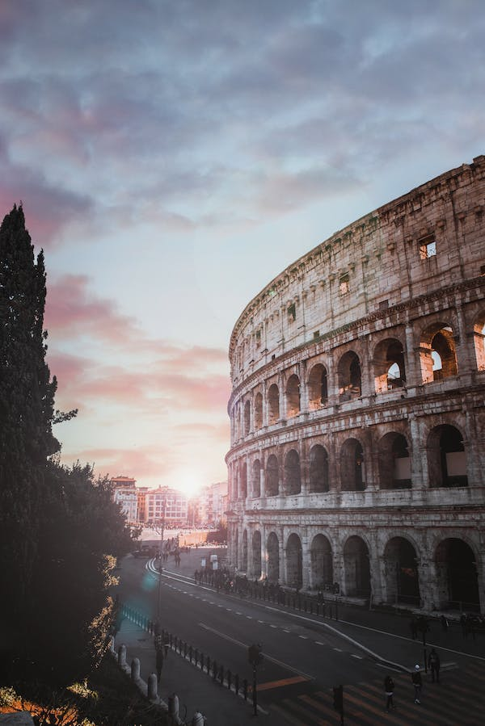
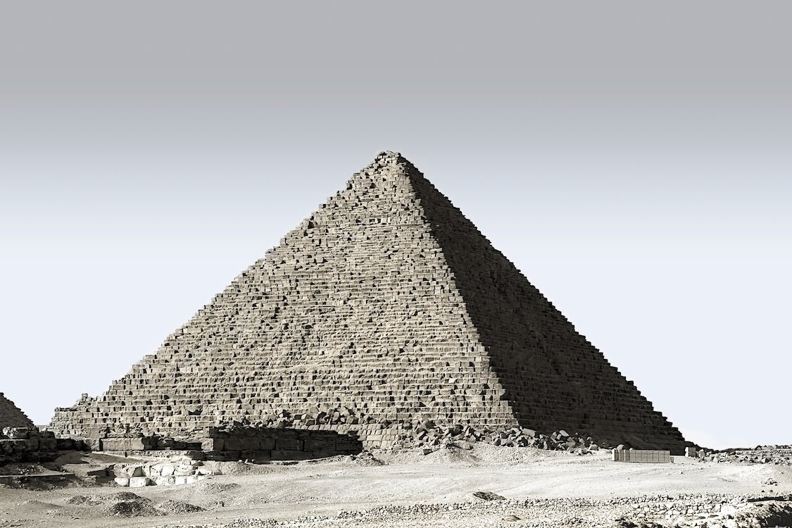
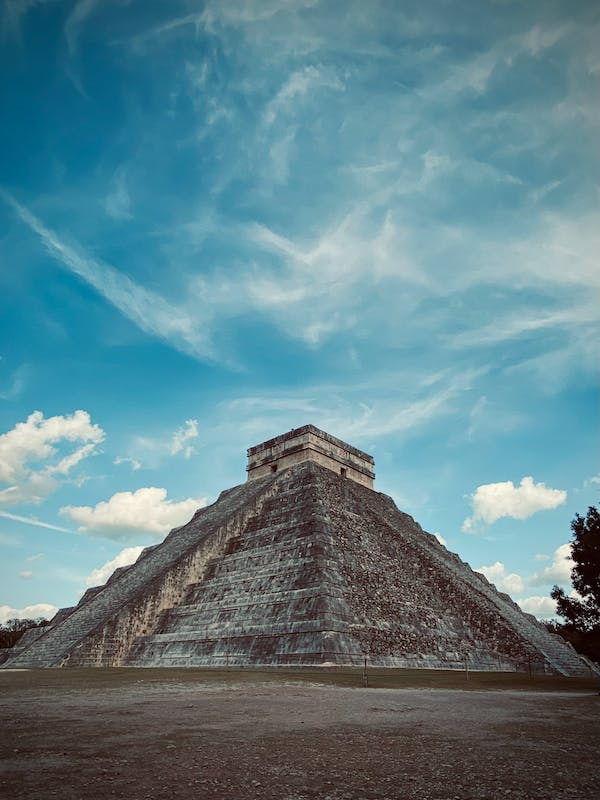
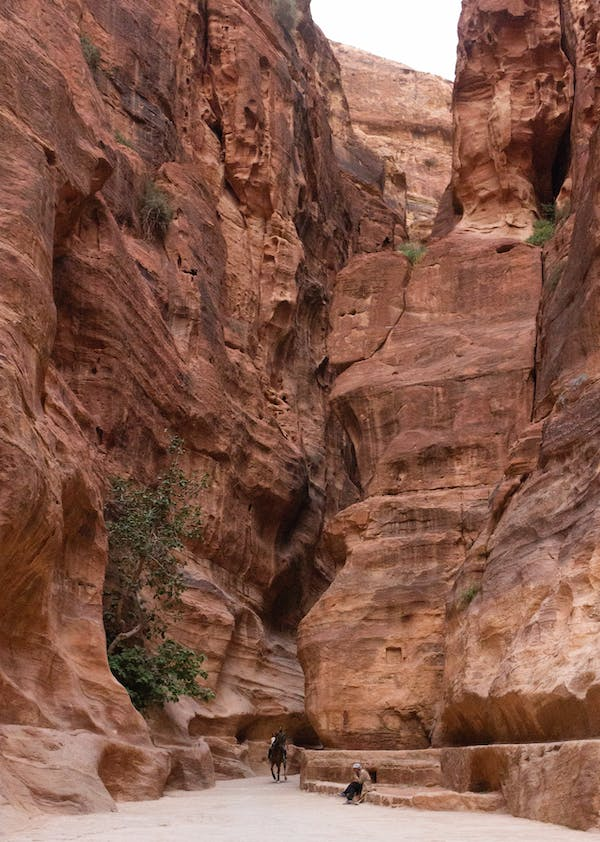
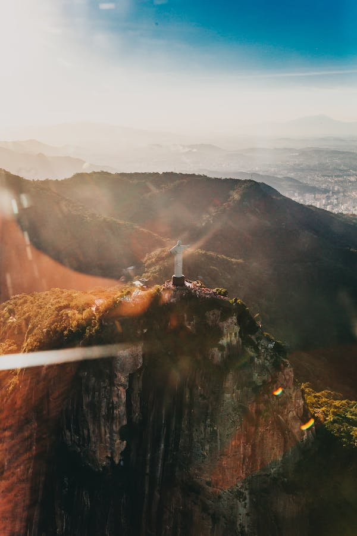
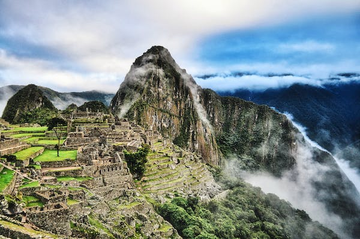

THE GREAT WALL OF CHINA

HISTORY
The Great Wall of China is an ancient series of walls and fortifications, totaling more than 13,000 miles in length, located in northern China. Perhaps the most recognizable symbol of China and its long and vivid history, the Great Wall was originally conceived by Emperor Qin Shi Huang in the third century B.C. as a means of preventing incursions from barbarian nomads. The best-known and best-preserved section of the Great Wall was built in the 14th through 17th centuries A.D., during the Ming dynasty. Though the Great Wall never effectively prevented invaders from entering China, it came to function as a powerful symbol of Chinese civilization’s enduring strength. Qin Dynasty Construction Though the beginning of the Great Wall of China can be traced to the fifth century B.C., many of the fortifications included in the wall date from hundreds of years earlier, when China was divided into a number of individual kingdoms during the so-called Warring States Period.
Why did China built its Great Wall?

COLOSSEUM
HISTORY
The Roman Colosseum has a long and rich history. From the times when it was used as a gladiatorial arena and witnessed staged hunts with thousands of wild beasts to today, it has seen the Roman Empire rise to its greatest splendor… and dwindle and disappear. It is said that up to 400,000 people met their end on the sands of the arena, as did one million wild animals of many different species. 72 AD – Construction of the Flavian Amphitheater begins under Emperor Vespasian. Vespasian viewed the Colosseum as a gift to the people of Rome — who were unhappy after the disastrous reign of Emperor Nero. 80 AD – Titus, Vespasian’s son, officially dedicates the Amphitheater, also known as the Colosseum, and decrees 100 days of games for its inauguration. Construction would be finalized completely under Titus’s younger brother and successor Domitian in 83 AD. 217 – A fire damages the building, destroying its wooden upper level completely. Mid 5th century – No exact date is known, but the last reports of gladiatorial combat in the Colosseum date from this period, although it continued to be used for hunts of wild beasts for some time afterwards
When was the Colosseum built and why?
The Pyramid Of Giza
HISTORY
The Great Pyramid of Giza is a defining symbol of Egypt and the last of the ancient Seven Wonders of the World. It is located on the Giza plateau near the modern city of Cairo and was built over a twenty-year period during the reign of the king Khufu (2589-2566 BCE, also known as Cheops) of the 4th Dynasty. Until the Eiffel Tower was completed in Paris, France in 1889, the Great Pyramid was the tallest structure made by human hands in the world; a record it held for over 3,000 years and one unlikely to be broken. Other scholars have pointed to the Lincoln Cathedral spire in England, built in 1300, as the structure which finally surpassed the Great Pyramid in height but, still, the Egyptian monument held the title for an impressive span of time.What is the story behind the Pyramids of Giza?
Chichen Itza
HISTORY
Chichen Itza was a Mayan city on the Yucatan Peninsula in Mexico. Although it’s an important tourist attraction, Chichen Itza also remains an active archeological site. New discoveries are still being unearthed in the area, providing even more insight into the culture and accomplishments of the Mayan people, who ruled much of present-day Mexico and Central America prior to the arrival of European colonists. Chichen Itza was named a UNESCO World Heritage Site in 1988 and, in 2007, it was voted in a global survey as one of the New Seven Wonders of the World. The well in the name refers to a number of underground rivers that run beneath the region and likely served as the source of water for the city. This easy access to water made the location perfect for a city the size of Chichen Itza.What are 3 facts about Chichen Itza?
Petra,Jordan
HISTORY
Petra is an ancient city that lies in present-day Jordan and dates back to the fourth century B.C. Ruins of the once-great metropolis and trading center now serve as an important archeologic site and tourist attraction. The city of Petra was established as a trading post by the Nabateans, an Arab Bedouin tribe indigenous to the region in what is now southwestern Jordan.Where Is Petra?
Christ The Redeemer
HISTORY
The concept was originally proposed by Princess Isabel in 1888. Rather than agreeing to a monument constructed atop Corcovado in her honour for freeing the slaves, the princess asked that an image of the Sacred Heart of Jesus Christ to be erected, declaring Him to be the True Redeemer of Mankind.
Who made Christ the Redeemer and why?
Machu Pichu
HISTORY
Tucked away in the rocky countryside northwest of Cuzco, Peru, Machu Picchu is believed to have been a royal estate or sacred religious site for Inca leaders, whose civilization was virtually wiped out by Spanish invaders in the 16th century. For hundreds of years, until the American archaeologist Hiram Bingham stumbled upon it in 1911, the abandoned citadel’s existence was a secret known only to peasants living in the region. The site stretches over an impressive 5-mile distance, featuring more than 3,000 stone steps that link its many different levels. Today, hundreds of thousands of people tramp through Machu Picchu every year, braving crowds and landslides to see the sunset over its towering stone monuments and marvel at the mysterious splendor of one of the world’s most famous manmade wonders.Why is Machu Picchu so special?
Taj Mahal

HISTORY
The Taj Mahal is an enormous mausoleum complex commissioned in 1632 by the Mughal emperor Shah Jahan to house the remains of his beloved wife. Constructed over a 20-year period on the southern bank of the Yamuna River in Agra, India, the famed complex is one of the most outstanding examples of Mughal architecture, which combined Indian, Persian and Islamic influences. At its center is the Taj Mahal itself, built of shimmering white marble that seems to change color depending on the daylight. Designated a UNESCO World Heritage site in 1983, it remains one of the world’s most celebrated structures and a stunning symbol of India’s rich history.What is inside the Taj Mahal?

Copyright © Muhammad Affan Siddiqui | Hamza Rizwan | Saeed Khan